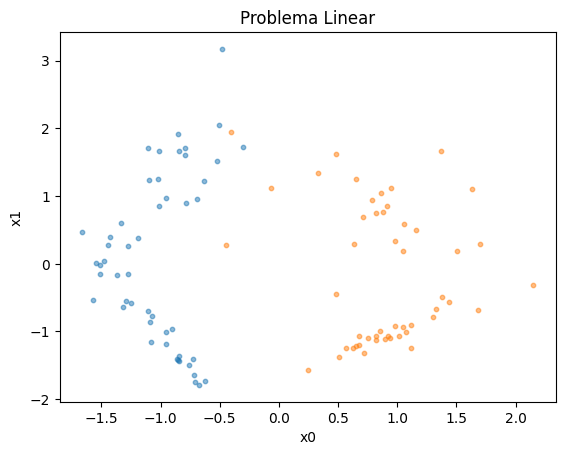
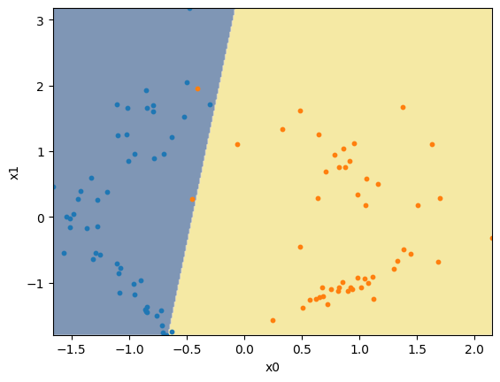
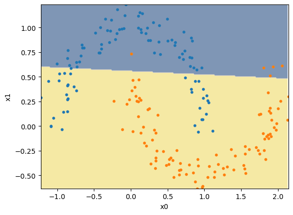
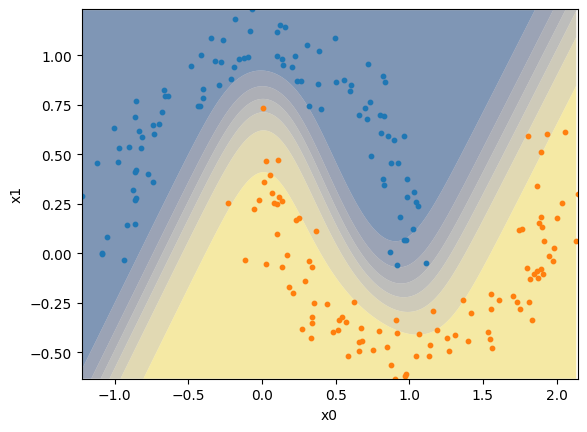
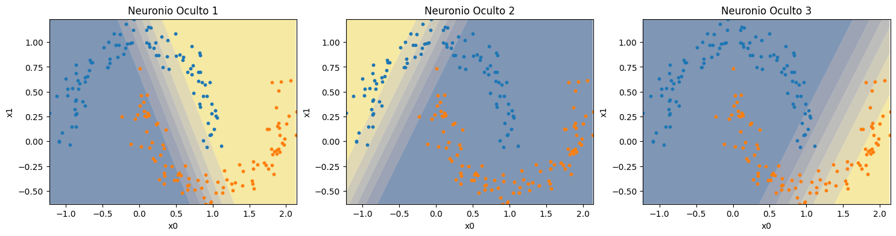
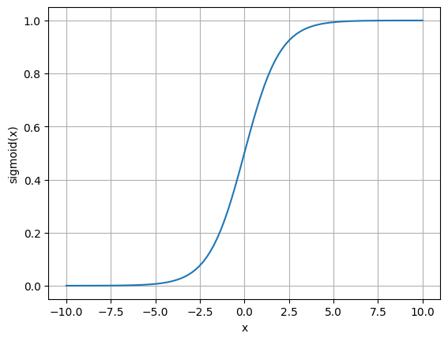

Representação de Redes Neurais Artificiais#
Neste capítulo, apresentaremos conceitos fundamentais sobre Redes Neurais Artificiais, como o perceptron, o perceptron multicamadas e o algoritmo de backpropagation.
Perceptron#
O Perceptron é uma representação matemática simplificada de neurônios, que foi publicada por Rosenblatt em 1958. Este modelo aprende a realizar tarefas ao ajustar parâmetros internos de forma análoga a como conexões sinápticas são reforçadas por meio da aprendizagem Hebbiana, proposta em 1949.

No caso, as entradas do perceptron fazem o papel dos dentritos, recebendo sinais que são então multiplicado por pesos, similar às forças de conexões sinápticas, e soma todos os valores. Quando este valor passa de um determinado limiar, o perceptron irá ativar sua saída de forma análoga a como o neurônio irá disparar um impulso elétrico por seu axônio.

O perceptron possui a forma matemática \(\hat{y} = f(\mathbf{w}^T\mathbf{x} + b)\), onde \(\mathbf{x}\) é um vetor de valores de entrada, que são multiplicados pelo vetor de pesos em \(\mathbf{w}\) e somados com um valor de viés \(b\), gerando um valor interno que é então passado à uma função de ativação \(f(\cdot)\), que transforma no valor de saída \(\hat{y}\).
Código do Perceptron em Python#
Vejamos abaixo uma implementação do perceptron.
import numpy as np
class Perceptron:
def __init__(self, input_size, learning_rate=0.01, epochs=100):
self.weights = np.zeros(input_size)
self.bias = 0
self.learning_rate = learning_rate
self.epochs = epochs
def _activation_function(self, x):
return np.where(x >= 0, 1, 0)
def predict(self, X):
linear_output = np.dot(X, self.weights) + self.bias
return self._activation_function(linear_output)
def fit(self, X, y):
for _ in range(self.epochs):
for i in range(X.shape[0]):
y_pred = self.predict(X[i])
if y_pred != y[i]:
self.weights += self.learning_rate * (y[i] - y_pred) * X[i]
self.bias += self.learning_rate * (y[i] - y_pred)
O processo de aprendizagem do perceptron para uma determinada tarefa ocorre por meio de um processo iterativo supervisionado. A partir de valores iniciais aleatórios (ou não) em \(\mathbf{w}\) e \(b\), o perceptron:
Realiza a previsão a partir da entrada de exemplo.
Comparada a saída com o valor esperado de saída.
Ajusta seus \(n\) pesos \(\mathbf{w}\) e viés \(b\) são ajustados proporcionalmente em função da taxa de aprendizado \(\eta\), dos erros de previsão e sinal de entrada.
Este processo se repete por todos os exemplos múltiplas vezes até que seja atingido um critério de parada, como um erro suficientemente baixo ou ao final de uma determinada quantidade de repetições (ou épocas).
Exemplo de Aplicação - Problema Linear#
Vamos analisar o aprendizado do perceptron em um exemplo linear.
Definimos um problema linear como aquele que pode ser separado por meio de uma única reta (ou hyperplano, quando falamos de dimensões maiores).
import matplotlib.pyplot as plt
from sklearn.datasets import make_classification
X, y = make_classification(
n_samples=100, n_features=2, n_classes=2,
n_informative=2, n_redundant=0, n_repeated=0,
random_state=1
)
plt.scatter(X[y==0,0], X[y==0,1], s=10, alpha=0.5)
plt.scatter(X[y==1,0], X[y==1,1], s=10, alpha=0.5)
plt.title('Problema Linear')
plt.xlabel('x0')
plt.ylabel('x1')
plt.show()

Criamos então o perceptron, cujo tamanho é definido como o número de variáveis do problema.
Em seguida, realizamos o treinamento por meio do método fit, que irá realizar o processo iterativo de ajuste dos pesos a partir do conjunto de dados.
Por fim, realizamos a previsão nos mesmos dados.
(Note que estamos utilizando os mesmos dados para treino e avaliação. O nome deste procedimento é resubstituição. Geralmente, preferimos avaliar o erro do modelo em um conjunto separado de dados, o que chamamos de validação cruzada.)
model = Perceptron(input_size=X.shape[1])
model.fit(X, y)
y_pred = model.predict(X)
Vejamos então a saída do modelo. Percebe-se que a borda de decisão é uma reta, conforme já mencionado.
def plot_decision_boundary(model, X, y, axis=None):
xx, yy = np.meshgrid(np.arange(X[:,0].min(), X[:,0].max(), 0.01),
np.arange(X[:,1].min(), X[:,1].max(), 0.01))
Z = model.predict(np.c_[xx.ravel(), yy.ravel()])
Z = Z.reshape(xx.shape)
if axis is None:
plt.contourf(xx, yy, Z, alpha=0.5, cmap='cividis', antialiased=True)
plt.scatter(X[y==0,0], X[y==0,1], s=10)
plt.scatter(X[y==1,0], X[y==1,1], s=10)
plt.xlim(X[:,0].min(), X[:,0].max())
plt.ylim(X[:,1].min(), X[:,1].max())
plt.xlabel('x0')
plt.ylabel('x1')
else:
axis.contourf(xx, yy, Z, alpha=0.5, cmap='cividis', antialiased=True)
axis.scatter(X[y==0,0], X[y==0,1], s=10)
axis.scatter(X[y==1,0], X[y==1,1], s=10)
axis.set_xlim(X[:,0].min(), X[:,0].max())
axis.set_ylim(X[:,1].min(), X[:,1].max())
axis.set_xlabel('x0')
axis.set_ylabel('x1')
plot_decision_boundary(model, X, y)
plt.show()

Limitação: Problemas Não-Lineares#
Se aplicarmos o perceptron em um problema não-linear, isto é, um problema cuja separação dos dados não segue uma linha reta, vemos que este modelo não consegue separar corretamente a maior parte dos exemplos.
from sklearn.datasets import make_moons
X, y = make_moons(n_samples=200, noise=0.1, random_state=42)
model = Perceptron(input_size=X.shape[1])
model.fit(X, y)
y_pred = model.predict(X)
plot_decision_boundary(model, X, y)
plt.show()

Portanto, vemos uma importante limitação dos perceptrons. Eles não conseguem resolver problemas não-lineares. Para resolver isto, precisamos de modelos mais complexos. Um exemplo é o perceptron multicamadas.
Perceptron Multicamadas#
O perceptron multicamadas é um modelo que possui um conjunto de perceptrons organizados em múltiplas camadas (conforme o nome).
Em sua forma mais simples, possuímos três camadas: a camada de entrada, a camada oculta, e a camada de saída. A camada de entrada não possui perceptrons. Porém, é por ela que os sinais de entrada serão recebidos. Na camada oculta, podemos ter diversos perceptrons posicionados em paralelo. Por fim, na camada de saída, temos um perceptron (no caso de classificação binária).

É interessante observar que, enquanto os perceptrons da camada oculta recebem os sinais de entrada (multiplicados pelos pesos “sinápticos”), a camada de saída recebe os sinais emitidos pelos perceptrons da camada oculta. Isto é similar a como os dendritos (entradas) de um neurônio recebem sinais dos axônios (saídas) de outro neurônio, formando uma rede neural artificial.
Também é importante ressaltar que não estamos limitados a apenas três camadas. Podemos ter diversas camadas de perceptrons, cada uma recebendo sinais emitidos pela camada anterior e emitindo para a próxima camada.
Vejamos abaixo a implementação do perceptron multicamadas em Python.
class MultilayerPerceptron:
def __init__(self, input_size, hidden_size, learning_rate=0.01, epochs=1000):
self.weights_input_hidden = np.random.randn(input_size, hidden_size)
self.bias_hidden = np.zeros(hidden_size)
self.weights_hidden_output = np.random.randn(hidden_size, 1)
self.bias_output = np.zeros(1)
self.learning_rate = learning_rate
self.epochs = epochs
def _sigmoid(self, x):
return 1 / (1 + np.exp(-x))
def _sigmoid_derivative(self, x):
return x * (1 - x)
def forward(self, X):
self.hidden_input = np.dot(X, self.weights_input_hidden) + self.bias_hidden
self.hidden_output = self._sigmoid(self.hidden_input)
self.final_input = np.dot(self.hidden_output, self.weights_hidden_output) + self.bias_output
self.final_output = self._sigmoid(self.final_input)
return self.final_output
def backward(self, X, y):
# Calcula o erro e o gradiente na camada de saída
output_error = y - self.final_output
output_delta = output_error * self._sigmoid_derivative(self.final_output)
# Calcula o erro e o gradiente na camada oculta
hidden_error = output_delta.dot(self.weights_hidden_output.T)
hidden_delta = hidden_error * self._sigmoid_derivative(self.hidden_output)
# Ajusta os pesos e viés por meio de gradient descent
self.weights_hidden_output += self.hidden_output.T.dot(output_delta) * self.learning_rate
self.bias_output += np.sum(output_delta, axis=0) * self.learning_rate
self.weights_input_hidden += X.T.dot(hidden_delta) * self.learning_rate
self.bias_hidden += np.sum(hidden_delta, axis=0) * self.learning_rate
def fit(self, X, y):
for _ in range(self.epochs):
self.forward(X)
self.backward(X, y)
def predict(self, X):
return self.forward(X)
Agora, realizamos o treino do Perceptron Multicamadas no problema não-linear. Da mesma forma que com o perceptron, realizamos o treino no método fit e a previsão no método predict.
Percebe-se que este novo modelo consegue criar uma borda de decisão não-linear, classificando corretamente a maior parte dos exemplos.
X, y = make_moons(n_samples=200, noise=0.1, random_state=42)
y = np.expand_dims(y, axis=1)
model = MultilayerPerceptron(input_size=X.shape[1], hidden_size=3, epochs=10_000)
model.fit(X, y)
y_pred = model.predict(X)
plot_decision_boundary(model, X, y[:,0])
plt.show()

Desbravando do Multilayer Perceptron#
Vamos entender, então, como o Perceptron Multicamadas consegue resolver o problema proposto. Começamos analisando cada neurônio, seguido pela nova função de ativação. Por fim, entenderemos o algoritmo de bakcpropagation.
Camada Oculta#
Para entender o que ocorre dentro deste modelo, vamos criar uma classe para facilitar o acesso à sua camada oculta.
class MLProbe():
def __init__(self, model, probe_position=0):
self.model = model
self.probe_position = probe_position
def predict(self, X):
self.model.forward(X)
return model.hidden_output[:,self.probe_position]
Assim, vamos analisar separadamente a saída de cada um dos três perceptrons da camada oculta.
fig, axs = plt.subplots(1, 3, figsize=(18,4))
for i in range(3):
probed_model = MLProbe(model, i)
axs[i].set_title(f'Neuronio Oculto {i+1}')
plot_decision_boundary(probed_model, X, y[:,0], axis=axs[i])

Conseguimos verificar que cada perceptron da camada oculta cria uma borda de classificação linear, cada uma em uma região diferente. Ao juntarmos estas bordas no perceptron da camada de saída, temos a saída com borda não-linear.
Função de Ativação#
Um ponto interessante que verificamos nas saídas dos perceptrons multicamadas é que a borda de classificação apresenta um gradiente entre uma classe e outra. Isto ocorre porque, ao invés de utilizarmos a função de ativação do perceptron original, utilizamos a função sigmóide, definida abaixo.
No gráfico a seguir conseguimos verificar o formato desta função, que parece um “S”. Para valores muito baixos de \(x\), o valor de saída da função é próximo a zero. Porém, a medida que \(x\) se aproxima de 0, a saída começa a aumentar até chegar em 0.5. Após isto, enquanto o valor de \(x\) aumenta, a saída da função aumenta até se aproximar do valor de 1.0.
De certa forma, esta função é parecida com a função de ativação do perceptron. Porém, esta função tem como característica ser contínua e derivável, o que permite o treinamento do perceptron multicamadas.
x = np.linspace(-10,10,100)
y = 1/(1+np.exp(-x))
plt.plot(x, y)
plt.grid()
plt.xlabel('x')
plt.ylabel('sigmoid(x)')
plt.show()

Otimização#
Por último, temos a otimização da rede neural. Isto é possível devido ao algoritmo de bakpropagation, criado em 1986, que foi um marco decisivo na área de inteligência artificial. Com as informações de gradientes, é possível otimizar os parâmetros da rede neural de forma a minimizar o erro do modelo.
Veremos estes conceitos no próximo capítulo.
Exercícios#
Execute a célula de treino do perceptron algumas vezes e verifique os resultados. Depois, realize o mesmo com o treino do perceptron multicamadas. Houveram diferenças? Discuta quais são as diferenças e justifique.
Modifique a chamada do Perceptron Multicamadas para utilizar apenas um perceptron na camada oculta. Depois, utilize apenas dois perceptrons. Foi possível resolver o problema não-linear? Discuta a resposta e justifique.
Reproduza o código do Multilayer Perceptron utilizando Pytorch.
Considerações Finais#
Neste capítulo, estudamos os conceitos fundamentais de como representar redes neurais. Começamos pelo perceptron e entendemos como ele é uma analogia matemática ao neurônio. Além disso, vimos as limitações do perceptron, e a solução de utilizar perceptrons multicamadas para resolver problemas não-lineares.
Próximos Capítulos#
Nos próximos capítulos falaremos sobre:
Funções de Perda e Avaliação em Redes Neurais
Algoritmos de Otimização de Redes Neurais
Referências#
Rosenblatt, F. (1958). The perceptron: a probabilistic model for information storage and organization in the brain. Psychological review, 65(6), 386.
Hebb, D. O. (1949). The organization of behavior: A neuropsychological theory. Psychology press.
Rumelhart, D. E., Hinton, G. E., & Williams, R. J. (1986). Learning representations by back-propagating errors. nature, 323(6088), 533-536.